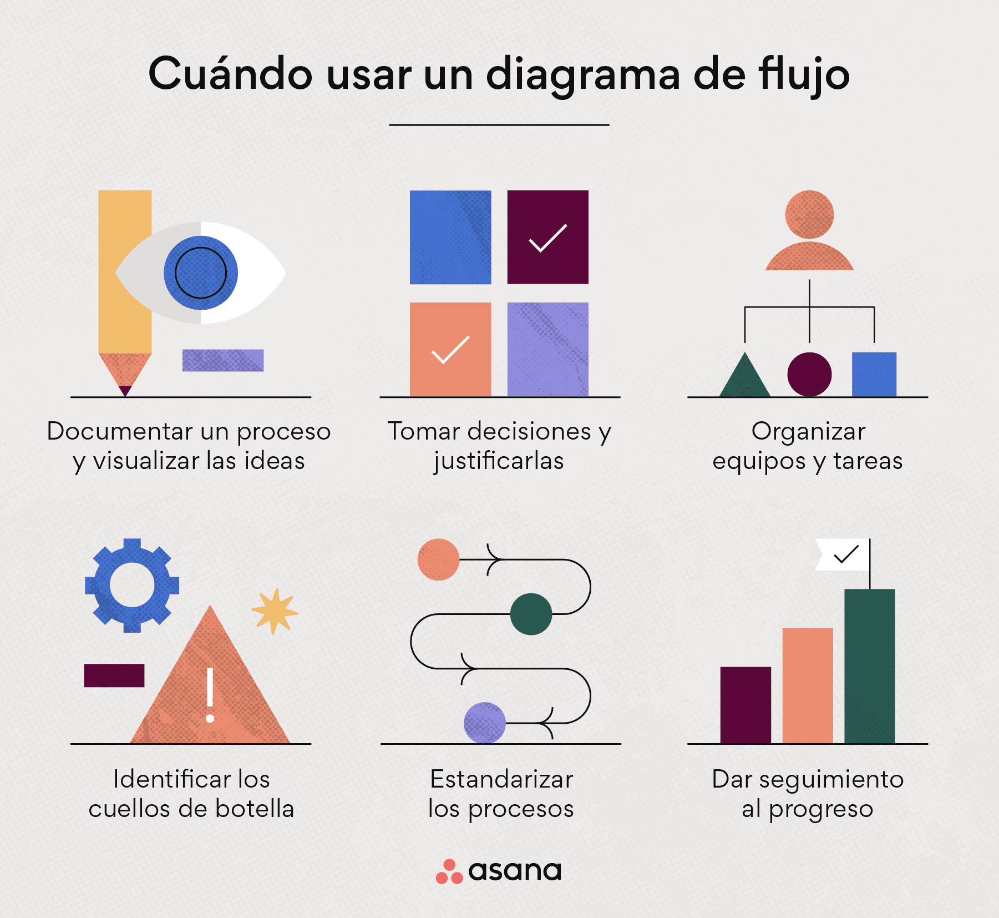

.jpg)
SEMANA 10 Y 11
 TEMA 1 DIAGRAMA DE FLUJOEs aquel que representa gráficamente la secuencia de operaciones o decisiones que ocurren durante un proceso y señala la dirección que siguen las etapas desde la entrada de la materia prima al proceso hasta su salida como productos, información o servicios, considerando los insumos y la energía que interviene. .
LINEA DE FLUJOEs la que representa la dirección que sigue el proceso. Mediante la línea de flujo se unen los elementos del flujograma.
ACTIVIDAD O TAREAla actividad o tarea es el conjunto de operaciones o de acciones a realizar dentro del proceso, y tiene como objetivo contribuir al desarrollo del producto, información o servicios.
ENTRADALa entrada corresponde a la materia prima o al material que se requiere para realizar el proceso de producción.
TEMA 2 ¿Qué es y qué nos ofrece exactamente el Internet de las Cosas?Es una red global de información y comunicación en donde todos los objetos que nos rodean se encuentran identificados y conectados permanentemente a Internet y que gracias a la fuente de datos que proporcionan sensores y actuadores embebidos,permiten la captura, almacenamiento y gestión de toda la información emitida por dichos objetos con el propósito de automatizar actividades y procesos diarios en nuestra vida cotidiana, así como la de analizar toda los datos generados aportándonos información útil que ayude a la correcta toma de decisión frente las situaciones que se nos presentan diariamente.